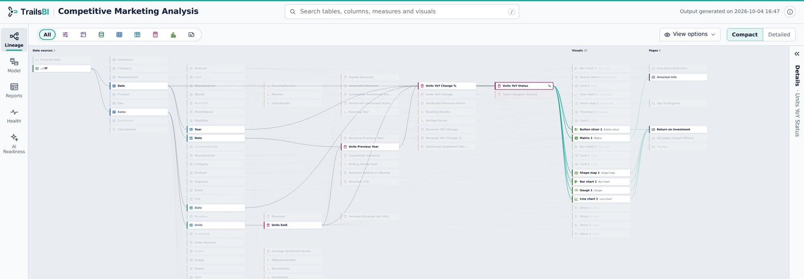
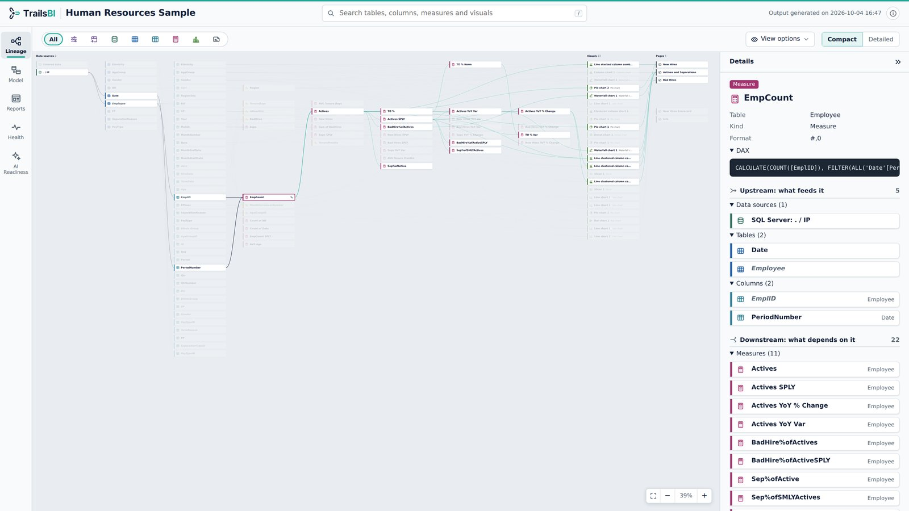
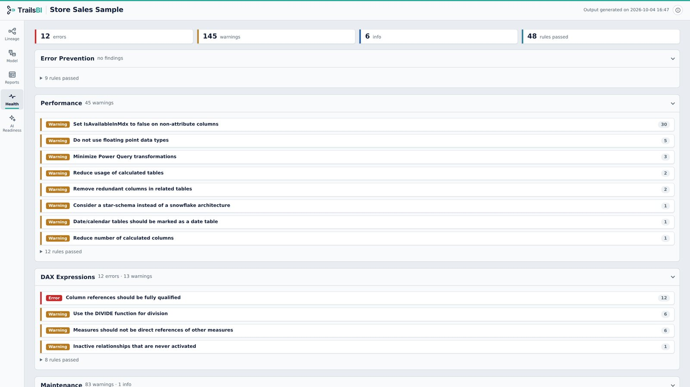

Trails for Power BI
End-to-end Data Lineage, Model Health & AI Readiness for Power BI
One report that maps every source, table, column, measure, visual and page, and tells you what to fix.
pip install trailsbiGetting 'PATH' error on Windows? Setup

Completely Offline Reports. Nothing leaves your machine, ever!
Read-onlyNever changes your PBIP files. No sign‑in, no Power BI service, no XMLA.
Works offlineOne HTML file with no external scripts or fonts. Opens with the network off.
No trackingNo cookies, analytics or usage stats. No admin rights needed to run it.
Everything about your Reports and Semantic Models
Click any item in one view to see it in the others. Search finds a name across all of them.
Follow any field from source to visual
- Pick a column or measure and see every data source, table and measure it depends on, in navy.
- Everything built on it, down to the visuals and pages, lights up in teal.
- Compact cards for the whole picture, detailed cards with usage counts when you need them.

Every table, column, measure and relationship
- A searchable list of the whole model with DAX and Power Query one click away.
- A relationship diagram laid out for you, with cardinality and filter direction on every line.
- Export the diagram as PNG or SVG, with table and column names hidden when you share it.

What each page and visual actually uses
- Every page drawn as a canvas preview, with page, report and visual-level filters.
- Each visual lists its fields by role: values, axis, legend, sort, filters and formatting.
- Fields a visual uses but the model no longer has are flagged before your users find them.

Best Practice Analyzer, without the setup
- Microsoft's Best Practice Analyzer rules, run straight from the TMDL files.
- Lineage checks on top: unused columns and measures, broken references, missing sort fields.
- Measures count toward their home table, so a measures table is never suggested for deletion.

A score for how well Copilot will understand the model
- Checks the foundations Copilot relies on: Q&A enabled, explicit measures, a star schema, a marked date table.
- Then naming, descriptions and AI instructions, grouped so you can work through them in order.
- One score from 0 to 100%, and each finding lists the tables, columns and measures it is about.

Now it's your turn
Start Analyzing your own Reports and Semantic Models.
Runs entirely on your machine: no sign-in, no upload, and the package has no dependencies beyond Python.
Getting 'PATH' error on Windows? Setup
- Save as PBIPIn Power BI Desktop: File, Save as, Power BI project (.pbip).
- Install TrailsBI
pip install trailsbi - Run it on your project
trailsbi "your-pbip-project-path"